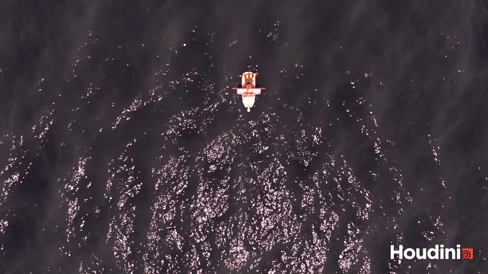

Blending two surfaces
I worked on matching displacement, surface behaviour and shading between the finite FLIP region and the much larger procedural ocean.
05 / FX & SIMULATION
A cinematic ocean simulation featuring the Going Merry ship inspired by One Piece.
Individual academic project · MSc, Bournemouth University
/ OVERVIEW
The goal was to create convincing interaction between a moving ship and a large ocean surface, exploring Houdini’s FLIP simulation tools, ocean workflows and Solaris/Karma rendering.
I was responsible for the simulation and technical setup, including preparing the existing ship asset as a collider, developing the ocean surface and assembling the scene for rendering.
I worked on matching displacement, surface behaviour and shading between the finite FLIP region and the much larger procedural ocean.
I created and refined VDB collision geometry, then adjusted the simulation to stabilise the ship–water interaction and significantly reduce fluid leakage.
The resulting setup combines a stable simulated FLIP region with a larger ocean surface. The Going Merry moves through the water in a scene assembled and rendered through Solaris/Karma.

Overhead view from the project video, showing the ship within the ocean surface.
Simulation, lighting, scene assembly and technical implementation: Joshua Medina.
The Going Merry is an existing One Piece ship design. The design and base 3D asset are not my original creation.
Exact 3D asset source and attribution: pending confirmation.